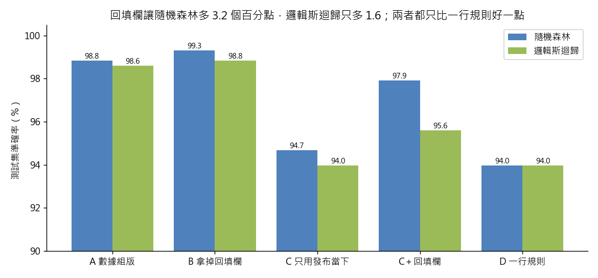

練習 12 - 準確率 99% 的模型
在本單元中，會介紹第 12 題背後的商業問題、它練的是哪一種資料分析，以及從資料到結論的完整做法、程式與圖表。建議先回 Hub - 資料分析練習案例庫 自己試著做一次，再來對照這一頁。
有人會這樣問你
數據組說他們做了一個模型，可以預測一則內容會不會帶來十筆以上訂閱，準確率 99%，下個月想拿它來排產製的優先順序。這東西可以信嗎？我要知道它到底學到了什麼。
用到的資料：content（L2）、content_monthly（L2）、dim_section（L2）
對應單元：模型看起來太準 就是出事了
這一題在商業上要回答什麼
主管最常遇到的，是別人交來一個「很準的模型」。拿它排產製優先順序之前，要能問出它憑什麼準、比一行常識規則好多少，才不會為一個抄答案的模型付錢。
這一題練的是哪一種資料分析
這一題練的是模型評估與基準線（baseline）。準確率要跟最簡單的規則比才有意義；每一個特徵都要檢查取得的時點，找出洩漏；也要知道不同模型對洩漏的敏感度不一樣，線性模型看不出來不代表沒有。
把「是付費牆內容就猜會」這條規則放到全部 1,438 則上：TP 252、FP 51、FN 19、TN 1,116，準確率 0.951。正例只佔 18.8%，先把這張表算出來，才看得出 99% 裡有多少是這條規則早就做到的。見 Confusion Matrix 與誤判代價
標籤本身有 0.698 bits 的不確定性，知道是不是付費牆之後只剩 0.235 bits，一個欄位就帶走了 66%。這就是一行規則能跟模型打得有來有回的原因。見 Entropy 與 Shannon 資訊理論
一步一步怎麼做
- 標籤是 conversion_cnt 是否大於等於 10。
- 動手前先把每個欄位分三堆：發布那一刻就知道的（content 與 dim_section 整張表）、要等月底才知道的（content_monthly 的流量欄位）、事後回填的（total_pv_lifetime，資料字典的 available_at 寫的是 post_hoc）。
- 模型用隨機森林（RandomForestClassifier，500 棵樹、random_state=42），測試集切 30%（分層抽樣、random_state=42）。
- 然後跑四個對照：(A) 數據組版，content_monthly 的欄位全丟進去；(B) 只拿掉 total_pv_lifetime；(C) 只用發布當下的欄位；(D) 完全不用模型的一條規則「是付費牆內容就猜會」。
工具怎麼選 語言用 Python，因為這四個版本只差在欄位清單，同一段 sklearn 程式改一個 list 就跑完，準確率能並排比較。
看完整程式（Python）
from _kmg import *
from sklearn.compose import ColumnTransformer
from sklearn.ensemble import RandomForestClassifier
from sklearn.linear_model import LogisticRegression
from sklearn.metrics import accuracy_score, roc_auc_score
from sklearn.model_selection import train_test_split
from sklearn.pipeline import make_pipeline
from sklearn.preprocessing import OneHotEncoder, StandardScaler
ct = l2("content.csv")
cm = l2("content_monthly.csv", parse_dates=["ingest_ts"])
ds = l2("dim_section.csv")
cm = cm.sort_values("ingest_ts").drop_duplicates(["content_id", "stat_month"], keep="last")
df = cm.merge(ct, on="content_id").merge(ds, on="section_id").reset_index(drop=True)
y = (df["conversion_cnt"] >= 10).astype(int)
publish = ["content_type", "section_id", "division", "is_paywalled", "word_cnt", "headline_len",
"has_number_in_headline", "is_sponsored", "is_paywall_default"]
monthly = ["pv", "uv", "sessions", "dwell_sec_total", "bounce_sessions", "share_cnt", "comment_cnt",
"paywall_hit_cnt", "total_pv_lifetime"]
CAT = {"content_type", "section_id", "division"}
def fit(cols, model="rf"):
X = df[cols].copy()
for c in X.columns:
if X[c].dtype == bool:
X[c] = X[c].astype(int)
cats = [c for c in cols if c in CAT]
nums = [c for c in cols if c not in CAT]
Xtr, Xte, ytr, yte = train_test_split(X, y, test_size=0.3, random_state=42, stratify=y)
if model == "rf":
pre = ColumnTransformer([("c", OneHotEncoder(handle_unknown="ignore"), cats), ("n", "passthrough", nums)])
est = RandomForestClassifier(n_estimators=500, random_state=42)
else:
pre = ColumnTransformer([("c", OneHotEncoder(handle_unknown="ignore"), cats), ("n", StandardScaler(), nums)])
est = LogisticRegression(max_iter=5000)
m = make_pipeline(pre, est).fit(Xtr, ytr)
p = m.predict_proba(Xte)[:, 1]
return float(accuracy_score(yte, p >= 0.5)), float(roc_auc_score(yte, p)), Xte.index
SETS = {"A": publish + monthly, "B": publish + [c for c in monthly if c != "total_pv_lifetime"],
"C": publish, "C＋回填": publish + ["total_pv_lifetime"]}
rf = {k: fit(v) for k, v in SETS.items()}
lr = {k: fit(v, "lr") for k, v in SETS.items()}
idx = rf["C"][2]
accD = float((df.loc[idx, "is_paywalled"].astype(int) == y.loc[idx]).mean())
print("A 數據組版 準確率", rf["A"][0])
print("A AUC 接近 1", rf["A"][1] > 0.995)
print("B 只拿掉回填欄 準確率", rf["B"][0])
print("C 只用發布當下 準確率", rf["C"][0])
print("C AUC", rf["C"][1])
print("D 一行規則 準確率（同一個測試集）", accD)
print("C 只贏一行規則（百分點）", (rf["C"][0] - accD) * 100)
print("C 加回 total_pv_lifetime 準確率", rf["C＋回填"][0])
print("一個欄位換來的準確率（百分點）", (rf["C＋回填"][0] - rf["C"][0]) * 100)
print("邏輯斯迴歸 C 準確率", lr["C"][0])
print("邏輯斯迴歸 C 加回 total_pv_lifetime 準確率", lr["C＋回填"][0])
print("paywall_hit_cnt 與 conversion_cnt 相關", float(df["paywall_hit_cnt"].corr(df["conversion_cnt"])))
share = y.groupby(df["is_paywalled"]).mean()
print("付費牆內容十筆以上轉換的比例", float(share[True]))
print("非付費牆內容十筆以上轉換的比例", float(share[False]))
print("隨機森林準確率：" + "、".join("%s %.1f%%" % (k, v[0] * 100) for k, v in rf.items()) + "；邏輯斯迴歸：" + "、".join("%s %.1f%%" % (k, v[0] * 100) for k, v in lr.items()))
# 課堂概念：一行規則在全部資料上的 confusion matrix，以及 is_paywalled 帶走多少不確定性
pw = df["is_paywalled"].astype(bool)
yy = y.astype(bool)
cmat = [int((pw & yy).sum()), int((pw & ~yy).sum()), int((~pw & yy).sum()), int((~pw & ~yy).sum())]
print("一行規則 全資料 confusion matrix（TP/FP/FN/TN）", cmat)
print("一行規則 全資料準確率", (cmat[0] + cmat[3]) / len(df))
print("正例比例", float(y.mean()))
H = entropy_bits([y.mean(), 1 - y.mean()])
Hc = sum(float(m.mean()) * entropy_bits([y[m].mean(), 1 - y[m].mean()]) for m in (pw, ~pw))
print("標籤 entropy（bits）", H)
print("知道是否付費牆後剩的 entropy（bits）", Hc)
print("互資訊（bits）", H - Hc)
print("帶走的比例", (H - Hc) / H)
labels = ["A 數據組版", "B 拿掉回填欄", "C 只用發布當下", "C＋回填欄", "D 一行規則"]
rv = [rf["A"][0], rf["B"][0], rf["C"][0], rf["C＋回填"][0], accD]
lv = [lr["A"][0], lr["B"][0], lr["C"][0], lr["C＋回填"][0], accD]
x = np.arange(5)
fig, ax = plt.subplots(figsize=(9, 4.2))
ax.bar(x - 0.2, np.array(rv) * 100, 0.4, label="隨機森林", color="#4f81bd")
ax.bar(x + 0.2, np.array(lv) * 100, 0.4, label="邏輯斯迴歸", color="#9bbb59")
for i in range(5):
ax.text(i - 0.2, rv[i] * 100, "%.1f" % (rv[i] * 100), ha="center", va="bottom", fontsize=8)
ax.text(i + 0.2, lv[i] * 100, "%.1f" % (lv[i] * 100), ha="center", va="bottom", fontsize=8)
ax.set_ylim(90, 100.5)
ax.set_xticks(x, labels)
ax.set_ylabel("測試集準確率（%）")
ax.set_title("回填欄讓隨機森林多 3.2 個百分點，邏輯斯迴歸只多 1.6；兩者都只比一行規則好一點")
ax.legend()
save_fig(fig, "ex12_leakage.png")
程式開頭的 from _kmg import * 載入共用的讀檔、去重、換幣別與畫圖函式，內容放在 練習 01 - 月會上的則數對不對。
結果會看到什麼
(A) 準確率 98.8%、AUC 接近 1.00。拆開來看，paywall_hit_cnt 根本是這個標籤的分母（跟 conversion_cnt 的相關係數 0.98），等於拿答案的一半去猜答案；total_pv_lifetime 更誇張，它是「到今天為止的累積瀏覽量」，內容發布那天這個數字還不存在。(B) 只拿掉回填欄，準確率還是 99.3%——因為真正的洩漏是那個分母，它還留著。(C) 乾淨版掉到 94.7%、AUC 0.98，看起來還是很好；但 (D) 那條一行規則在同一個測試集上的準確率是 94.0%，模型只贏它 0.7 個百分點。最後把 total_pv_lifetime 單獨加回乾淨版，準確率立刻從 94.7% 跳到 97.9%——一個欄位換來 3.2 個百分點，這就是洩漏的指紋。同一件事換成邏輯斯迴歸做，只會從 94.0% 升到 95.6%：線性模型吃不太到這個洩漏，不代表沒有洩漏。真正的發現是：付費牆內容有 83% 會超過十筆轉換、非付費牆只有 1.7%，所謂的模型其實是把 is_paywalled 那一欄抄了一遍。
- 隨機森林準確率：A 98.8%、B 99.3%、C 94.7%、C＋回填 97.9%；邏輯斯迴歸：A 98.6%、B 98.8%、C 94.0%、C＋回填 95.6%
圖怎麼讀

五種做法在同一個測試集上的準確率，藍色是隨機森林、綠色是邏輯斯迴歸，D 是一行規則所以兩色一樣。縱軸從 90% 開始，差距看起來大，其實都在幾個百分點之內。繼續練習
上一題 練習 11 - 加推名單的門檻、下一題 練習 13 - 停投版位清單，或回到 Hub - 資料分析練習案例庫 挑別的題目。
學生版｜更新於 2026-09-13 11:59